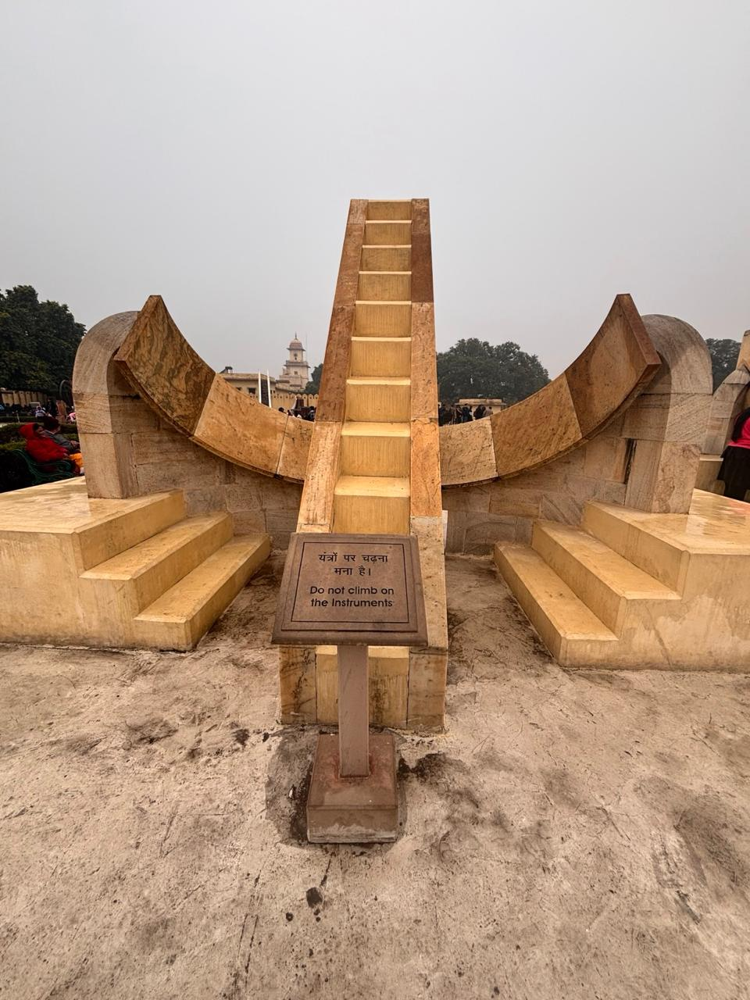
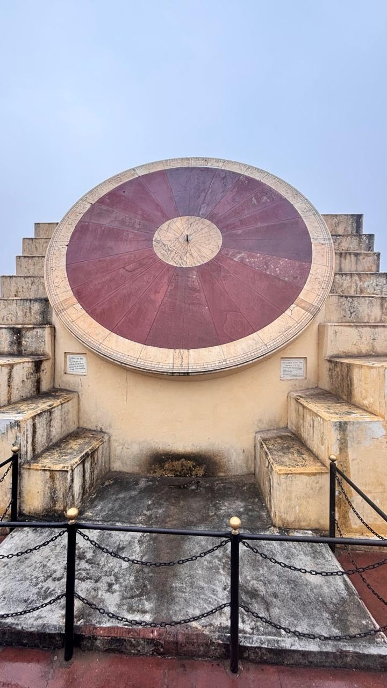

Astronomical Instruments in India - AR Exploration
Explore the fascinating astronomical instruments developed in India through Augmented Reality. Click on the AR button to view the models in your own environment (requires a compatible device).
1. Gnomon (Shanku Yantra)
A simple shadow-casting instrument used to measure time and the Sun's altitude.
2. Astrolabe
A versatile instrument used for determining the position of celestial objects and for timekeeping.
3. Samrat Yantra

A massive equinoctial sundial used for precise time measurement and determining celestial declinations.
4. Nadivalaya Yantra

An instrument designed to measure the altitude of celestial bodies as they cross the meridian.
5. Kapala Yantra
A spherical instrument used for observing the positions and apparent motion of planets.